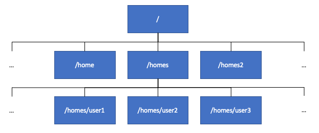

[USERNAME]@bifx-core2:~$ basename /library/training/bioinformatics_on_the_command_line
bioinformatics_on_the_command_line
[USERNAME]@bifx-core2:~$ dirname /library/training/bioinformatics_on_the_command_line
/library/training
[USERNAME]@bifx-core2:~$ Working with the file system
In this section you will learn how to explore the Linux file system, and how to create, move, delete and edit files and directories.
Introducing the Linux file system
Key Points
- In Linux, like other operating systems, the file system is stuctured as a tree
- The top level directory is known as the root directory, and is referred to on the command line as
/
- The top level directory is known as the root directory, and is referred to on the command line as
- The file system contains regular files, directories, and symbolic links to other files
- Each file has a unique path in the file system, along with other attributes such as its size, when it was last modified, and the permissions associated with it
- Each user’s files are generally stored in a directory called the user’s home directory, also referred to as
~- Home directories are normally found in
/home, however on the bifx servers user home directories are also found in/homesand/homes2
- Home directories are normally found in
- bash keeps track of the current working directory that the shell is in
- When a user logs in to a Linux system, it starts in the user’s own home directory by default
The Linux file system

The Linux file system, where all files in a Linux system are stored, is structured as a tree with a single root directory, known as /, as shown in the above image. The root directory has a number of subdirectories. The most important for us on the bifx servers are the /homes and /homes2 folders, as these are where users’ home directories are stored. Each user’s files are generally stored in their home directory, and by default users on the bifx servers are not permitted to create files outside their own home directory. You can find out the path to your home directory by running the command echo $HOME.
File paths in Linux
File paths in Linux can be either absolute paths, or relative paths.
Absolute paths
Each file in the Linux file system tree is uniquely identified by its absolute path. The absolute path comprises a list of the parent directories of the file, starting from the root directory, separated by the / character, followed by the name of the file. The name of a file, and the path to its parent directory, can be extracted from its path using the basename and dirname commands:
In Linux file names can contain almost any character other than /. However, many characters, including spaces and special characters such as ’ and “, can make files difficult to work with, so, in general, it’s better to stick with letters, numbers, underscores, dashes, and dots when naming files. If you do have to work with a file that contains special characters, you can either put the file path in quotes or use backslashes to escape the special characters:
[USERNAME]@bifx-core2:~$ basename /library/training/bioinformatics_on_the_command_line/file name with spaces
basename: extra operand ‘with’
Try 'basename --help' for more information.
[USERNAME]@bifx-core2:~$ basename '/library/training/bioinformatics_on_the_command_line/file name with spaces'
file name with spaces
[USERNAME]@bifx-core2:~$ basename /library/training/bioinformatics_on_the_command_line/file\ name\ with\ spaces
file name with spaces
[USERNAME]@bifx-core2:~$Note: Tab completion works with filenames as well as command names.
The pwd command shows the absolute path of the current working directory:
[USERNAME]@bifx-core2:~$ pwd
/homes/[USERNAME]
[USERNAME]@bifx-core2:~$Relative paths
While absolute paths provide an unambiguous way of referring to files, they can be cumbersome. For this reason, Linux makes it possible to define paths relative to the current working directory or the user’s home directory:
~refers to the user’s home directory.refers to the current working directory..refers to the parent directory of the current working directory../..refers to the parent directory of the parent directory of the current working directory,../../..refers to the parent directory of that directory, and so on
If you just use the name of a file, Linux assumes that you are referring to a file in the current working directory.
The realpath command can be used to show the absolute path corresponding to a relative path:
[USERNAME]@bifx-core2:~$ realpath ~
/homes/[USERNAME]
[USERNAME]@bifx-core2:~$ realpath .
/homes/[USERNAME]
[USERNAME]@bifx-core2:~$ realpath ..
/homes
[USERNAME]@bifx-core2:~$ Glob patterns
Linux also makes it possible to include wildcards in file paths, making it possible to refer to a group of file paths at once. Paths that include wildcards are called glob patterns. Useful wildcards include:
*which matches any sequence of characters?which matches any single character[]which matches a single character within the square brackets- for example, [aA] would match ‘a’ or ‘A’
- ranges of numbers are allowed, so [1-5] matches 1, 2, 3, 4, or 5
When bash sees a glob pattern, it expands it into a list of file paths that match the pattern (separated by spaces). A convenient way to experiment with glob patterns (and to make sure they match the files you want them to) is to use the echo command, which prints its arguments to the command line:
[USERNAME]@bifx-core2:~$ echo /homes/genomes/mouse/*
/homes/genomes/mouse/GRCm38 /homes/genomes/mouse/mm10 /homes/genomes/mouse/mm9 /homes/genomes/mouse/UCSC
[USERNAME]@bifx-core2:~$ echo /homes/genomes/mouse/mm?
/homes/genomes/mouse/mm9
[USERNAME]@bifx-core2:~$ echo /homes/genomes/mouse/mm*
/homes/genomes/mouse/mm10 /homes/genomes/mouse/mm9
[USERNAME]@bifx-core2:~$Note: If you write an argument to a command that contains glob wildcard characters, but is not a glob pattern, always remember to put it in quotes to prevent it from being expanded by the shell. It’s also worth remembering that glob patterns do not match files that start with a dot. These are hidden files and are often used as configuration files that users do not normally need to see.
File types and attributes in Linux
The Linux file system contains a three main types of file:
- Regular files, which contain data
- Directories, which contain other files or directories
- Symbolic links, which are aliases for files and folders
As well as its name and path, each file has a number of attributes associated with it, such as its size, when it was last modified, and the permissions associated with it. You can check the attributes associated with a file using the stat command:
[USERNAME]@bifx-core2:~$ stat /library/training/bioinformatics_on_the_command_line/bioinformatics_on_the_command_line_files.tar.gz
File: /library/training/bioinformatics_on_the_command_line/bioinformatics_on_the_command_line_files.tar.gz
Size: 4059820 Blocks: 7975 IO Block: 8192 regular file
Device: 37h/55d Inode: 13189 Links: 1
Access: (0644/-rw-r--r--) Uid: ( 0/ root) Gid: ( 0/ root)
Access: 2020-11-12 12:56:58.543765691 +0000
Modify: 2020-11-12 12:53:47.358367501 +0000
Change: 2020-11-12 12:56:31.032140047 +0000
Birth: -
[USERNAME]@bifx-core2:~$The output of the stat command shows us:
- What type of file this is (a regular file)
- The size of the file (4059820)
- The identity and group of the owner of the file (root)
- When the file was last accessed, modified, and changed
- The permissions on the file (-rw-r–r–)
- The first character of the permission string tells us whether it is a file or directory
- The rest of the string can be divided into three groups (rw-, r–, and r–), representing the permissions granted to the user that owns the file, the group associated with the file, and all users
- There are three types of permission. These are permission to read the file (
r), permission to write to the file (w), and permission to execute the file (x)
Note: When you run the stat command on a directory it shows the size of the directory itself, not the size of the directory with all of its contents (which is normally what you want). To find the size of a directory and its contents, you can use the du -sh command:
[USERNAME]@bifx-core2:~$ stat /library/training/bioinformatics_on_the_command_line
File: /library/training/bioinformatics_on_the_command_line
Size: 4 Blocks: 41 IO Block: 4096 directory
Device: 37h/55d Inode: 13190 Links: 2
Access: (0755/drwxr-xr-x) Uid: ( 0/ root) Gid: ( 0/ root)
Access: 2020-11-13 10:21:45.604446040 +0000
Modify: 2020-11-12 22:13:44.568434982 +0000
Change: 2020-11-12 22:13:44.568434982 +0000
Birth: -
[USERNAME]@bifx-core2:~$ du -sh /library/training/bioinformatics_on_the_command_line
4.0M /library/training/bioinformatics_on_the_command_line
[USERNAME]@bifx-core2:~$ Challenge:
Create a glob pattern that matches /homes/genomes/mouse/GRCm38 and /homes/genomes/mouse/UCSC only.Solution.
Solution:
One option would be /homes/genomes/mouse/[GU]*
Challenge:
Create a glob pattern that matches everything in /homes/genomes/mouse except for /homes/genomes/mouse/UCSC.Solution.
Solution:
One option would be /homes/genomes/mouse/*[0-9]
Challenge:
Who has permission to read the file ‘/library/training/bioinformatics_on_the_command_line/bioinformatics_on_the_command_line_files.tar.gz’? Who is permitted to write to it? Is anyone permitted to execute it?Solution.
Solution:
Everyone on the server can read the file. The user that owns the file can read and write to it. Nobody is permitted to execute this file.
Exploring the file system
Key Points
cdchanges the current working directorypushdalso changes the current working directory, but keeps a history of where you’ve been- Use
popdto go back, anddirsto look at the history
- Use
- The
lscommand lists the files in the current working directory - The
treecommand provides a readable summary of the files in the current directory and its subdirectories - The
findcommand recursively searches for files in the current file system
The following example demonstrates how we can navigate within the file system, and view and find files:
[USERNAME]@bifx-core2:~$ cd /library/training/bioinformatics_on_the_command_line
[USERNAME]@bifx-core2:/library/training/bioinformatics_on_the_command_line$ ls
analysis_improved.sh analysis_raw.sh bioinformatics_on_the_command_line_files.tar.gz 'file name with spaces'
[USERNAME]@bifx-core2:/library/training/bioinformatics_on_the_command_line$ ls -lah
drwxr-xr-x 2 root root 6 Nov 16 12:53 .
drwxr-xr-x 3 root root 3 Nov 12 12:56 ..
-rwxr-xr-x 1 root root 3.2K Nov 16 12:54 analysis_improved.sh
-rw-r--r-- 1 root root 1.3K Nov 16 12:53 analysis_raw.sh
-rw-r--r-- 1 root root 3.9M Nov 12 12:53 bioinformatics_on_the_command_line_files.tar.gz
-rw-r--r-- 1 root root 0 Nov 12 21:58 'file name with spaces'
[USERNAME]@bifx-core2:/library/training/bioinformatics_on_the_command_line$ ls -lah *.gz
-rw-r--r-- 1 root root 3.9M Nov 12 12:53 bioinformatics_on_the_command_line_files.tar.gz
[USERNAME]@bifx-core2:/library/training/bioinformatics_on_the_command_line$ pushd /homes/genomes/
/homes/genomes /library/training/bioinformatics_on_the_command_line
[USERNAME]@bifx-core2:/homes/genomes$ pushd /library/training/
/library/training /homes/genomes /library/training/bioinformatics_on_the_command_line
[USERNAME]@bifx-core2:/library/training$ dirs
/library/training /homes/genomes /library/training/bioinformatics_on_the_command_line
[USERNAME]@bifx-core2:/library/training$ tree
.
└── bioinformatics_on_the_command_line
├── analysis_improved.sh
├── analysis_raw.sh
├── bioinformatics_on_the_command_line_files.tar.gz
└── file name with spaces
1 directory, 4 files
[USERNAME]@bifx-core2:/library/training$ popd
/homes/genomes /library/training/bioinformatics_on_the_command_line
[USERNAME]@bifx-core2:/homes/genomes$ find ./mouse/mm10/ -type f -name '*.bed'
./mouse/mm10/mm10_repeat_masker.bed
./mouse/mm10/mm10-liftover-blacklist.bed
./mouse/mm10/annotation/GSE17051_cLAD_regions.mm10.bed
./mouse/mm10/annotation/Mus_musculus.GRCm38.79.edited.bed
./mouse/mm10/annotation/mm10_cgi.liftover.bed
./mouse/mm10/annotation/mm10-liftover-blacklist.bed
./mouse/mm10/annotation/GSE17051_ciLAD_regions.mm10.bed
./mouse/mm10/annotation/Ensembl.transcripts.bed
./mouse/mm10/annotation/mm10.blacklist.bed
./mouse/mm10/annotation/mm10-liftover-blacklist.OLD.bed
./mouse/mm10/mm10repeats.bed
[USERNAME]@bifx-core2:/homes/genomes$ popd
/library/training/bioinformatics_on_the_command_line
[USERNAME]@bifx-core2:/library/training/bioinformatics_on_the_command_line$ cd
[USERNAME]@bifx-core2:~$ Note: In this example we have used the command ls -lah. This is an example of a shorthand that you can use in the bash shell when specifying multiple flags. ls -lah is equivalent to ls -l -a -h.
Challenge:
List all of the paths to files named ‘genome.fa’ in the directory ‘/homes/genomes/mouse/’Solution.
Solution:
Run find /homes/genomes/mouse/ -type f -name 'genome.fa'
Challenge:
Using the commands you’ve learned in this section, explore the /homes/genomes/ directory on the server. Which organisms do we have genomes for (no need to include subdirectories)? Which genome releases do we have for each of these organisms? Are there any files in ’/homes/genomes/mouse over 6GB in size?Solution.
Solution:
Run ls /homes/genomes/ to list the organisms in ‘/homes/genomes’. Run find /homes/genomes/ -maxdepth 2 -type d to list the subdirectories of the directories representing the organisms, which represent genome releases. Run find /homes/genomes/mouse -type f -size +6G to list the files over 6GB in size.
Creating and deleting files
Key Points
- Files can be created using
touch, by a text editor, or by redirecting the output of a program - Symbolic links can be created using
ln -s - Directories can be created using
mkdir, and empty directories can be removed usingrmdir - The
rmcommand can be used to delete files, links, and directories along with their contents (using the-rflag)- There is no recycle bin in Linux, so
rmshould be used with care. The-iflag can be used to prompt for confirmation before deleting files
- There is no recycle bin in Linux, so
The following example demonstrates how we can create and remove files, directories and links:
[USERNAME]@bifx-core2:~$ mkdir course
[USERNAME]@bifx-core2:~$ cd course
[USERNAME]@bifx-core2:~/course$ mkdir -p dir1 dir2 dir3/dir4
[USERNAME]@bifx-core2:~/course$ tree
.
├── dir1
├── dir2
└── dir3
└── dir4
4 directories, 0 files
[USERNAME]@bifx-core2:~/course$ touch file1
[USERNAME]@bifx-core2:~/course$ tree
.
├── dir1
├── dir2
├── dir3
│ └── dir4
└── file1
4 directories, 1 file
[USERNAME]@bifx-core2:~/course$ cd dir1
[USERNAME]@bifx-core2:~/course$ ln -s ../file1
[USERNAME]@bifx-core2:~/course$ cd ..
[USERNAME]@bifx-core2:~/course$ tree
.
├── dir1
│ └── file1 -> ../file1
├── dir2
├── dir3
│ └── dir4
└── file1
4 directories, 2 files
[USERNAME]@bifx-core2:~/course$ rmdir *
rmdir: failed to remove 'dir1': Directory not empty
rmdir: failed to remove 'dir3': Directory not empty
rmdir: failed to remove 'file1': Not a directory
[USERNAME]@bifx-core2:~/course$ tree
.
├── dir1
│ └── file1 -> ../file1
├── dir3
│ └── dir4
└── file1
3 directories, 2 files
[USERNAME]@bifx-core2:~/course$ rm -ri *
rm: descend into directory 'dir1'? y
rm: remove symbolic link 'dir1/file1'? y
rm: remove directory 'dir1'? n
rm: descend into directory 'dir3'? y
rm: remove directory 'dir3/dir4'? y
rm: remove directory 'dir3'? y
rm: remove regular empty file 'file1'? n
[USERNAME]@bifx-core2:~/course$ tree
.
├── dir1
└── file1
1 directory, 1 file
[USERNAME]@bifx-core2:~/course$ rmdir dir1
[USERNAME]@bifx-core2:~/course$ rm -i file1
rm: remove regular empty file 'file1'? y
[USERNAME]@bifx-core2:~/course$ tree
.
0 directories, 0 files
[USERNAME]@bifx-core2:~/course$The example demonstrates a number of commands:
touchto create an empty file- This can also be used to update the timestamp on an existing file
mkdirto create empty directories- Add -p to create nested directories by specifying paths
ln -sto create a symbolic link to a file or directoryrmdirto delete empty directories, without deleting files or non-empty directoriesrmcommand- Add -r to remove directories (and their contents)
- Add -i to ask for confirmation before deleting
Challenge:
How could you create a symbolic link which has a different name to the file you’re linking to?Solution.
Solution:
Use ln -s -T [path to target file] [new name]
Copying and moving files and directories
Key Points
- Files and directories can be copied using
cp- To copy a directory along with its contents, use the
-rflag
- To copy a directory along with its contents, use the
- Archive files in tar format can be extracted using the
tarcommand - Directories can be synchronised using
rsync, which only copies updated files - Files and directories can be moved or renamed using
mv- Groups of files can be renamed using
prename
- Groups of files can be renamed using
- Attributes of files and directories can be changed using
chmodandtouchtouchupdates the timestamp of an existing filechmodchanges the permissions on a file
The following example demonstrates how we can copy files and directories, extract archive files, synchronise directories, and update file permissions:
[USERNAME]@bifx-core2:~/course$ cp /library/training/bioinformatics_on_the_command_line/bioinformatics_on_the_command_line_files.tar.gz ./
[USERNAME]@bifx-core2:~/course$ tar xzvf bioinformatics_on_the_command_line_files.tar.gz
bioinformatics_on_the_command_line_files/
bioinformatics_on_the_command_line_files/raw_yeast_rnaseq_data.fastq
bioinformatics_on_the_command_line_files/yeast_genome.fasta
bioinformatics_on_the_command_line_files/README
bioinformatics_on_the_command_line_files/yeast_genes.bed
[USERNAME]@bifx-core2:~/course$ tree
.
├── bioinformatics_on_the_command_line_files
│ ├── raw_yeast_rnaseq_data.fastq
│ ├── README
│ ├── yeast_genes.bed
│ └── yeast_genome.fasta
└── bioinformatics_on_the_command_line_files.tar.gz
1 directory, 5 files
[USERNAME]@bifx-core2:~/course$ cp -a -r bioinformatics_on_the_command_line_files bioinformatics_on_the_command_line_files-copy
[USERNAME]@bifx-core2:~/course$ tree
.
├── bioinformatics_on_the_command_line_files
│ ├── raw_yeast_rnaseq_data.fastq
│ ├── README
│ ├── yeast_genes.bed
│ └── yeast_genome.fasta
├── bioinformatics_on_the_command_line_files-copy
│ ├── raw_yeast_rnaseq_data.fastq
│ ├── README.txt
│ ├── yeast_genes.bed
│ └── yeast_genome.fasta
└── bioinformatics_on_the_command_line_files.tar.gz
2 directories, 9 files
[USERNAME]@bifx-core2:~/course$ mv bioinformatics_on_the_command_line_files-copy/README ./README.txt
[USERNAME]@bifx-core2:~/course$ tree
.
├── bioinformatics_on_the_command_line_files
│ ├── raw_yeast_rnaseq_data.fastq
│ ├── README
│ ├── yeast_genes.bed
│ └── yeast_genome.fasta
├── bioinformatics_on_the_command_line_files-copy
│ ├── raw_yeast_rnaseq_data.fastq
│ ├── yeast_genes.bed
│ └── yeast_genome.fasta
├── bioinformatics_on_the_command_line_files.tar.gz
└── README.txt
2 directories, 9 files
[USERNAME]@bifx-core2:~/course$ rsync -av bioinformatics_on_the_command_line_files/ bioinformatics_on_the_command_line_files-copy/
sending incremental file list
./
README
sent 765 bytes received 38 bytes 1,606.00 bytes/sec
total size is 14,147,099 speedup is 17,617.81
[USERNAME]@bifx-core2:~/course$ tree
.
├── bioinformatics_on_the_command_line_files
│ ├── raw_yeast_rnaseq_data.fastq
│ ├── README
│ ├── yeast_genes.bed
│ └── yeast_genome.fasta
├── bioinformatics_on_the_command_line_files-copy
│ ├── raw_yeast_rnaseq_data.fastq
│ ├── README
│ ├── yeast_genes.bed
│ └── yeast_genome.fasta
├── bioinformatics_on_the_command_line_files.tar.gz
└── README.txt
2 directories, 10 files
[USERNAME]@bifx-core2:~/course$ prename 's/yeast/s.cerevisiae/' bioinformatics_on_the_command_line_files-copy/*
[USERNAME]@bifx-core2:~/course$ tree
.
├── bioinformatics_on_the_command_line_files
│ ├── raw_yeast_rnaseq_data.fastq
│ ├── README
│ ├── yeast_genes.bed
│ └── yeast_genome.fasta
├── bioinformatics_on_the_command_line_files-copy
│ ├── raw_s.cerevisiae_rnaseq_data.fastq
│ ├── README
│ ├── s.cerevisiae_genes.bed
│ └── s.cerevisiae_genome.fasta
├── bioinformatics_on_the_command_line_files.tar.gz
└── README.txt
2 directories, 10 files
[USERNAME]@bifx-core2:~/course$ rm -r -i bioinformatics_on_the_command_line_files-copy README.txt
rm: descend into directory 'bioinformatics_on_the_command_line_files-copy/'? y
rm: remove regular file 'bioinformatics_on_the_command_line_files-copy/s.cerevisiae_genome.fasta'? y
rm: remove regular file 'bioinformatics_on_the_command_line_files-copy/raw_s.cerevisiae_rnaseq_data.fastq'? y
rm: remove regular file 'bioinformatics_on_the_command_line_files-copy/README'? y
rm: remove regular file 'bioinformatics_on_the_command_line_files-copy/s.cerevisiae_genes.bed'? y
rm: remove directory 'bioinformatics_on_the_command_line_files-copy/'? y
rm: remove regular file 'README.txt'? y
[USERNAME]@bifx-core2:~/course$ tree
.
├── bioinformatics_on_the_command_line_files
│ ├── raw_yeast_rnaseq_data.fastq
│ ├── README
│ ├── yeast_genes.bed
│ └── yeast_genome.fasta
└── bioinformatics_on_the_command_line_files.tar.gz
1 directory, 5 files
[USERNAME]@bifx-core2:~/course$ chmod a-w bioinformatics_on_the_command_line_files/raw_yeast_rnaseq_data.fastq
[USERNAME]@bifx-core2:~/course$ rm bioinformatics_on_the_command_line_files/raw_yeast_rnaseq_data.fastq
rm: remove write-protected regular file 'bioinformatics_on_the_command_line_files/raw_yeast_rnaseq_data.fastq'? n
[USERNAME]@bifx-core2:~/course$This example has demonstrated a number of commands:
cpto copy files and directories (with the-rflag set)- The
-aflag preserves file attributes when they are copied
- The
rsyncto synchronise directoriesmvto move files or directoriesprenameto perform ‘search and replace’ style renaming of filestouchto update the timestamp of an existing filechmodto change the permissions on a file- It’s always a good idea to make raw data files read only as we did in the example, as it makes it more difficult to remove or overwrite them accidentally
Challenge:
How would you change the permissions on a file so that nobody can execute it, and only the owner of the file can read it or write to it?Solution.
Solution:
You can do this using the following steps:
[USERNAME]@bifx-core2:~/course$ touch chmod_test
[USERNAME]@bifx-core2:~/course$ ls -l chmod_test
-rw-rw-r-- 1 [USERNAME] [USERNAME] 0 Nov 14 12:51 chmod_test
[USERNAME]@bifx-core2:~/course$ chmod ugo-rwx chmod_test
[USERNAME]@bifx-core2:~/course$ chmod u+rw chmod_test
[USERNAME]@bifx-core2:~/course$ ls -l chmod_test
-rw------- 1 [USERNAME] [USERNAME] 0 Nov 14 12:51 chmod_test
[USERNAME]@bifx-core2:~/course$ Challenge:
How could you check which filesrsync will copy across when synchronising folders without actually copying them?
Solution.
Solution:
rsync has a --dry-run flag that allows you to do this.